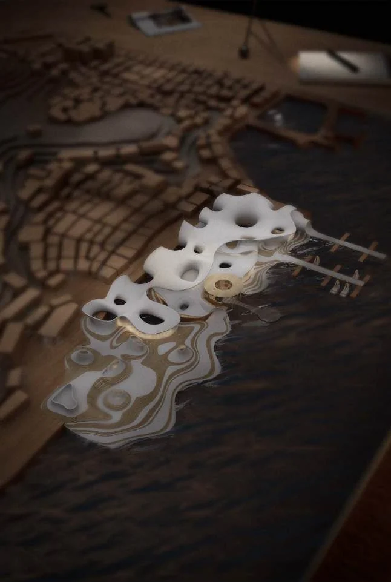
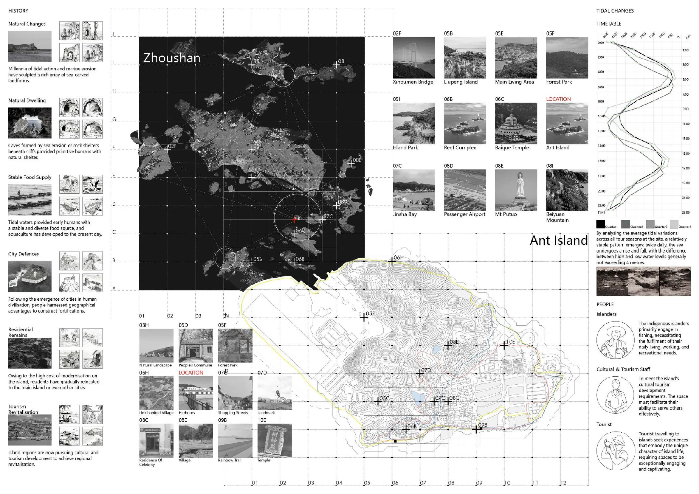
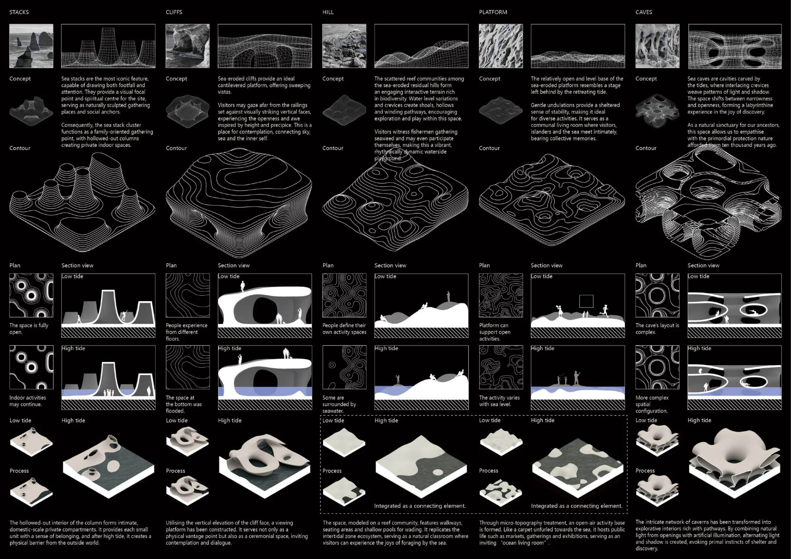
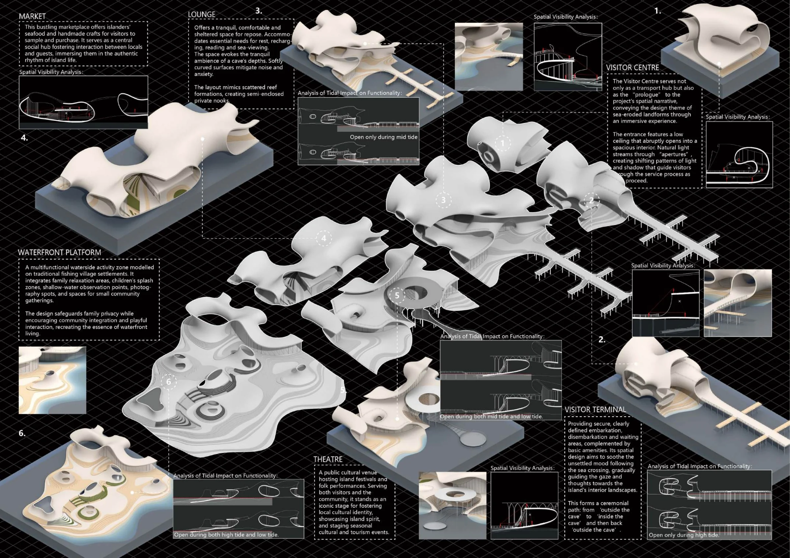
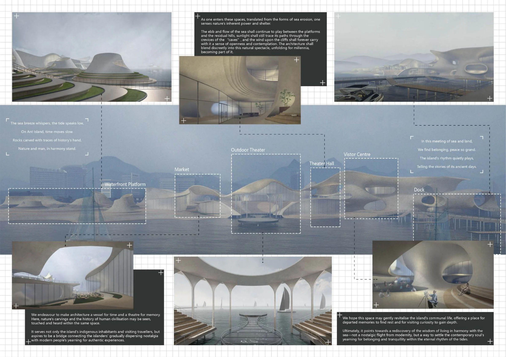

THE LITTORAL ZONE
滨海地带
自然 × 建筑2025 / 团队项目

查看主图让建筑成为山与海之间的连接。
以舟山蚂蚁岛的游客中心为设计对象，关注气候、海蚀地貌与建筑的关系。建筑结合岛屿地形，在山体和海岸之间建立连续的空间体验，同时回应人的游览与停留需求。
- 项目类型
- 团队项目 / 2025
- 本人工作
- 本人完成Rhino SubD曲面与场景建模、V-Ray室内外渲染；项目保留团队署名
- 使用工具
- Rhino SubD / V-Ray
理解场地
从海蚀地貌与岛屿环境出发，思考自然形态和空间体验的关系。
曲面建模
使用Rhino SubD组织游客中心的连续曲面及场景，连接山体与海岸。
场景表达
通过室内外渲染呈现曲面、材质、光线与环境关系。
项目图纸与过程
点击图纸，查看大图。


查看大图

查看大图

查看大图

查看大图